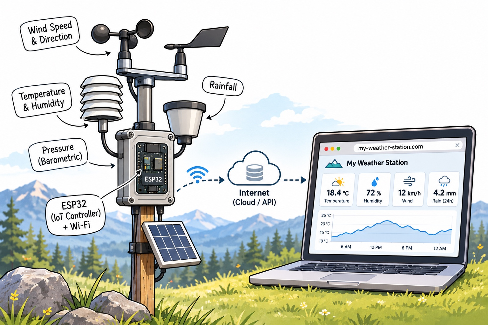
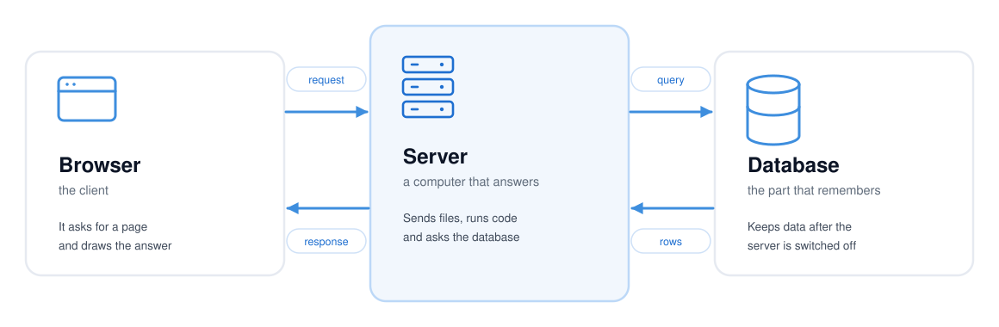
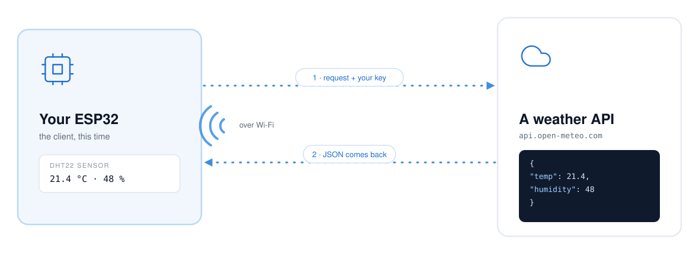
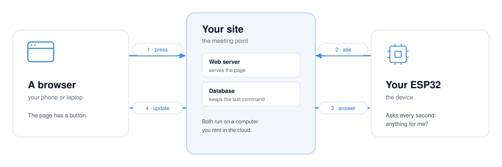
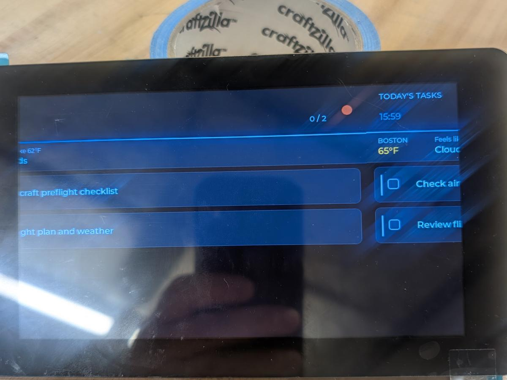

The shape of the web
Browser, server, database. Who asks, who answers, who remembers.
Class 10 · Week 10 · Fall 2026
Your board can sense the room and turn a motor. Today you give it the internet: a browser asks, a server answers, a database remembers.

Where we are
It reads a sensor, it drives a motor, and every one of those things happened on your desk. Today it joins the web.
What we'll cover
Each one is a conversation between two computers. By the end they form a circle.
Browser, server, database. Who asks, who answers, who remembers.
A fixed way to ask another computer for data, and the shape of the answer.
Your board calls a service over Wi-Fi and acts on what comes back.
A page on your phone controls the thing sitting on your desk.
Part 1 · Web architecture
Every page you have ever loaded is these three things talking to each other.
It runs on your machine. It asks for a page or some data, then draws whatever comes back.
A computer that is always on. It receives the request, works out the answer, and sends it.
It holds the rows. The server asks it questions and it answers with data, quickly and in order.
It touches all three, usually in under a second. That is the whole trick.
Part 1 · The round trip

Browser asks · Server answers · Database remembers. Your board can play any of the three parts.
Part 1 · Under the hood
You type an address, or a page loads a chart. This is what happens next.
It sends a request to an address on the network. The request names what it wants.
A file, a calculation, or a lookup. Either way it works out what the answer should be.
If the answer needs stored data, the server queries the database and gets rows back.
HTML, an image, or JSON. The browser draws it. Nothing is kept on your machine.
A slow page is usually step 2 or 3. A page showing stale data is almost always step 3.
Part 1 · The two messages
The browser asks in HTTP. The server asks its database in SQL. The same temperature moves between them.
Browser → server · HTTP
GET /readings/current?station=Medford HTTP/1.1
Host: weather.example.com
Accept: application/json
Server → browser · HTTP
HTTP/1.1 200 OK Content-Type: application/json {"station": "Medford", "temp_c": 8.4}
Server → database · SQL
SELECT temp_c, taken_at FROM readings WHERE station = 'Medford' ORDER BY taken_at DESC LIMIT 1;
One row comes back. The server turns it into the JSON on the left.
Part 1 · Where it runs
The word sounds like a building. It is a program, on a machine, listening at an address.
The ESP32 runs a small web server. It is the page you opened from your phone in Class 6.
One command serves a folder to anyone on the same Wi-Fi. Same idea, more memory.
Somebody else's computer, with a public address, running day and night. You rent it by the month.
Different machine. Class 6 put the server on your board. Today we also call servers we did not build.
Part 2 · APIs
Application programming interface. A menu of requests a service agrees to answer.
What it is
A list of addresses, the questions each one accepts, and the shape of the answer.
If you can read the menu, you can call it. The same request works from a browser, a laptop, or a board with 8 MB of memory.
You get data, not a page to look at.
Nothing to install. You send a request over the network.
It is somebody's server, answering by rules they wrote down.
The rules live in the docs. Every API has a page that lists its addresses and what each one returns.
Part 2 · One request
Read them left to right and you have written the request yourself.
GET reads. POST sends something new. Almost everything today is GET.
The service and the endpoint, copied from the docs.
The values that choose what you get. Joined with an ampersand.
Many APIs want one. It identifies you, and it is billed to you.
Put together
https://api.open-meteo.com/v1/forecast?latitude=42.4&longitude=-71.1¤t=temperature_2m
Part 2 · The answer
Names and values, in braces. It reads like a list with labels on it.
{ "latitude": 42.4, "longitude": -71.1, "current": { "time": "2026-11-12T09:00", "temperature_2m": 8.4 } }
Each label is a key you can ask for by name.
Inside current sits another set of names. You reach it one level at a time.
data["current"]["temperature_2m"] is 8.4. That is a value you can compare and act on.
Part 2 · Same request
Paste the address into the bar and it calls the API. The board makes the same call from code.
The JSON appears in the window. No tool, no login, no extension.
https://api.open-meteo.com/v1/forecast?latitude=42.4&longitude=-71.1¤t=temperature_2m
import urequests r = urequests.get(URL) data = r.json() print(data["current"]["temperature_2m"])
Same address, same answer. The browser draws it for you; the board stores it in a variable.
Part 2 · Keys
It answers "who is asking", and it is the only thing standing between you and someone else's bill.
A key in a screenshot, a slide, or a public repository is a key someone else can spend.
Easier to revoke, and easier to see which build used what.
Free tiers count requests per minute and per day. The docs say the number. Read it before you loop.
Revoke it and make a new one. Every service has a button for this. Rotating a key takes two minutes; a surprise bill does not.
Part 3
The board is the client this time. It asks, waits, reads the answer, and does something physical with it.
Part 3 · Device to API

1 join the Wi-Fi · 2 send the request · 3 read the JSON · 4 do something with it
Part 3 · The loop
The first step is the one people skip. Nothing else works until it passes.
Connect to Wi-Fi and wait for an address. Check that it connected before you ask for anything.
The address from the docs, your parameters, and your key. One call to urequests.get().
The body is text. r.json() turns it into names and values you can index.
Print it, put it on a screen, or drive a pin. The answer only matters once it changes the device.
A request that fails does not raise an error on the board. Check r.status_code before you trust the body.
Part 3 · A small build
One sensor you did not have to wire: the weather outside. The board reads it and changes a color.
The prompt
"My ESP32 is connected to Wi-Fi. Call a weather API for the current temperature in Medford, print it, and turn an RGB LED blue when it is below 10 °C. Check once every ten minutes."
Ten minutes, not one second. The weather does not change faster, and free tiers count requests.
# once the board is online while True: r = urequests.get(URL) temp = r.json()["current"]["temperature_2m"] print("outside:", temp) led.value(1 if temp < 10 else 0) time.sleep(600)
Part 3 · Debugging
The board never got an address. Wrong password, or out of range. Fix the network before you touch the code.
The key is missing, the key is not allowed, or you are asking too often. The number tells you which.
You asked for a key that is not in the answer. Print the whole body once and read the names it actually has.
A rate limit, or a sleep that is too short. Add the delay the docs ask for and try again.
Print the status code and the first part of the body. Nine times in ten, that names the problem.
Part 4
In Class 6 your board served the page. Now the page lives on the internet, and the board is the thing it controls.
Part 4 · Two ways
The board runs a web server and your phone joins its Wi-Fi. Nothing else is needed, and it only works on that network.
Board and browser both talk to a website. It works from anywhere, and the site has to hold the last command.
A device behind a home router has no public address. It can call out. You cannot call in. So the device asks.
Part 4 · The relay

The board asks every second, so the button feels instant. The database keeps the last command, so a reboot does not lose it.
Part 4 · What it looks like
Three requests in the time it takes to lift your thumb.
You press Red. The page sends a request to your site, with the new value in the body.
POST /color → red
The server writes one row to the database and answers the browser. The page shows the new state.
On its next ask, the board gets red back and sets the pins. The LED changes.
No install, no app store, no pairing screen. A page, an address, and a device on the network.
Part 4 · All of it
The board reads its own sensor.
It calls the weather API and gets a number.
It posts both readings to your site.
The site serves a page that shows both, live.
Every arrow is one request. That is the whole internet.

Carry it forward
Weather, transit, a shared sheet, a model. Pick one input that changes what your build does.
A page that shows the state is easier to demo than a serial console, and easier for a visitor to try.
If the API does not answer, say so on the screen. A fallback is part of the design, not an afterthought.
Checkpoint 2: integrated features and user experience. The whole product working together, and what a user does, sees, and feels.
Before you go
Pick one API you could call from your final project. Write down the address and what the answer looks like. That is the design.
Due and where to find it
Concept pitch
Due today, Thu, Nov 12
Checkpoint 2 · intelligent device project
Due Thu, Nov 19
Office hours
go.tufts.edu/meet_tvdv
Course materials
tuftsmaker.github.io/ENT-164